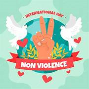

Prevenir la violencia requiere fomentar una cultura de paz basada en el respeto, la educación en igualdad, el diálogo constructivo y la crianza positiva, eliminando castigos corporales. Es crucial identificar señales tempranas, fortalecer redes de apoyo, promover la equidad de género y utilizar mecanismos legales para denunciar agresiones físicas, psicológicas o digitales.
Actividades para fomentar la no violencia
